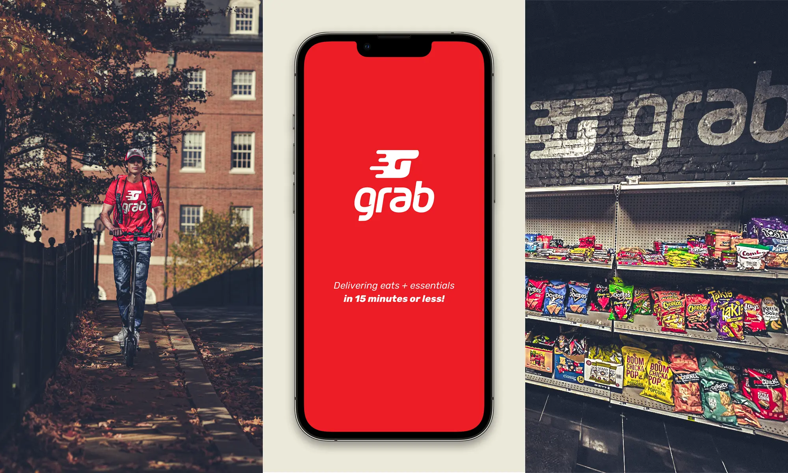
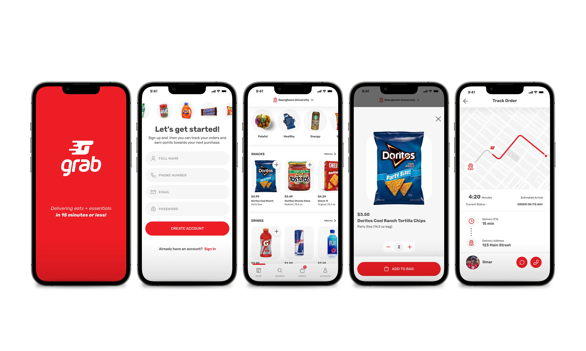
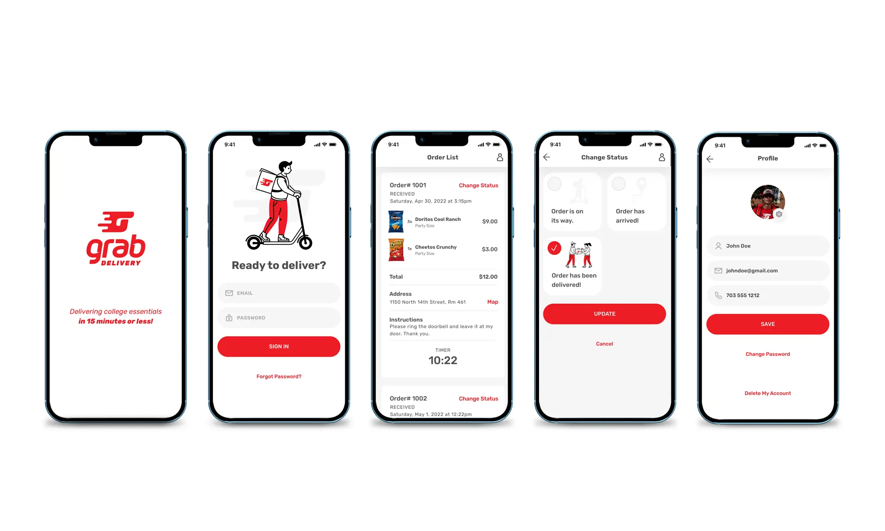

01
Beat the errand.
Make delivery faster than walking, biking, shopping, and returning.
Case Study 03
Grab was a local rapid-delivery startup built around a simple promise: deliver eats and essentials to high-density urban and university markets in 15 minutes or less.
The model combined a dark-store format, curated convenience-store inventory, ready-to-eat food, custom-built technology, and electric scooter delivery.
My role was to help take that idea from concept to live pilot: native iOS customer app, native iOS courier app, internal fulfillment web app, brand, marketing, and the experience model behind a real Georgetown POC.
Business Context
In dense urban and university markets, the opportunity was not just grocery delivery. It was immediacy: snacks, drinks, household essentials, OTC medicine, ready-to-eat meals, and clutch items people wanted now — without walking, biking, waiting, or meeting a driver at the nearest cross street.
At Georgetown, the alternatives were limited. Students typically had to walk or bike to the nearest Wawa or CVS, both more than half a mile from campus, while larger delivery apps often relied on cars that could not easily maneuver inside campus.
Grab’s scooter-based model was designed to solve for true door-to-door delivery: closer inventory, faster fulfillment, and a more personal local experience.
The business needed an experience that could make the promise believable, operationally possible, and repeatable: fast ordering, accurate fulfillment, precise location handling, efficient courier flows, and a brand that felt local, immediate, and useful.
For customers, this meant less effort.
For the business, it meant speed, retention, operational efficiency, and proof that a hyperlocal delivery model could work in the real world.

01
Make delivery faster than walking, biking, shopping, and returning.
02
Use scooters and precise location handling to reach customers where cars and traditional delivery apps struggled.
03
Focus on high-demand, consume-now items: snacks, drinks, essentials, medicine, and ready-to-eat food.
04
Connect customer ordering, fulfillment, courier routing, and inventory into one working system.

How I Led the Work
Grab was a zero-to-one build: the customer promise, product catalog, courier workflow, inventory model, hot food partnerships, fulfillment process, and marketing all had to operate as one system.
As Co-Founder and Head of Product Design & Marketing, I led the product experience across the native iOS customer app, courier app, internal fulfillment tools, brand expression, and launch marketing. I also stayed close to the real service experience — customer feedback, delivery moments, operational friction, and the places where the product promise either held up or broke down.
The strategy was to design for speed without making the experience feel transactional. Grab needed to feel immediate, local, useful, and personal — a convenience store brought to the customer, not another generic delivery marketplace.
The result was a live Georgetown POC with 250+ products, hot food, real customers, and real deliveries — proof that a hyperlocal model could deliver faster, more personal convenience in the moments people needed it most.
The examples below show how that system worked in practice.
Proof in Practice
The customer app and courier/fulfillment system were different parts of the experience, but they had to work together. The app created demand and confidence. The courier and fulfillment tools made the promise real.
Focus
Make ordering eats and essentials fast, clear, and confidence-building.
Make fulfillment, routing, and delivery fast enough to support the customer promise.
What Shipped
Native iOS customer app with product browsing, cart, checkout, location handling, and delivery experience.
Native iOS courier app and internal fulfillment web app supporting order packing, courier workflows, and scooter delivery.
Challenge
Customers had to understand and trust a new hyperlocal delivery model before the brand had broad awareness.
Operations had to support real-time inventory, hot food, order preparation, courier coordination, and accurate campus delivery.
UX Strategy
Simplify product discovery, make speed visible, reduce ordering friction, and create a local brand experience that felt useful and immediate.
Design focused courier and fulfillment workflows that helped couriers pack, route, locate customers, and complete deliveries quickly.
Proof
Soft launch produced 500+ app downloads, 375+ active users, less than $10/user CAC, and 70% of users ordering within 30 days of download.
Grab launched with 250+ products across 6 categories and 1 pilot restaurant; average door-to-door delivery time was 11 minutes, with some deliveries completed in as little as 6 minutes.
Why It Mattered
Proved customers would adopt and reuse the service with minimal marketing.
Proved the speed promise could be supported operationally, not just claimed in marketing.
Together, these initiatives show how product design and service operations had to be designed as one connected system. The goal was bigger than launching an app: build the experience, tools, and operational model needed to make hyperlocal delivery feel genuinely faster, easier, and more personal.

Connecting the Dots
Fast delivery was not something Grab could solve with logistics alone. The customer app had to make ordering feel immediate. The inventory model had to prioritize the items people wanted right now. The fulfillment tools had to help orders move quickly from shelf to bag. The courier app had to support fast routing, accurate handoff, and campus delivery.
That made the work bigger than app design. Product, brand, inventory, fulfillment, courier workflow, and customer communication all had to support the same promise: convenience that felt faster than getting it yourself.
The result was a live Georgetown pilot with real customers, real deliveries, 250+ products, hot food, and average door-to-door delivery in 11 minutes. Some orders arrived in as little as 6 minutes — fast enough to make the experience feel genuinely different.